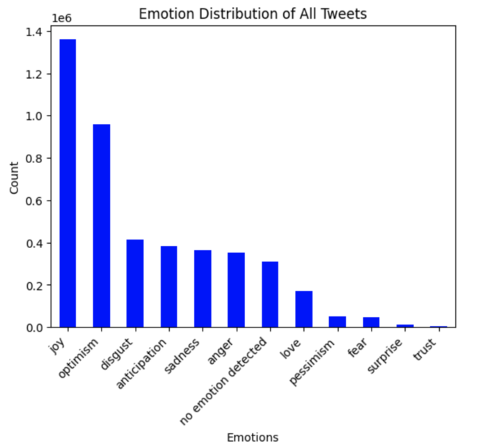
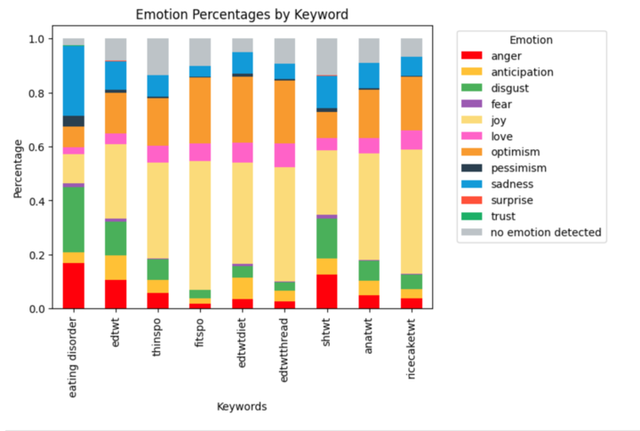
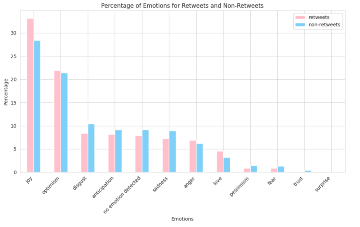
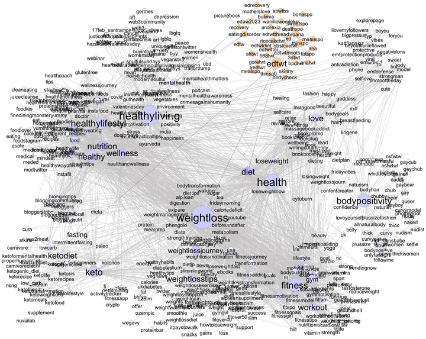
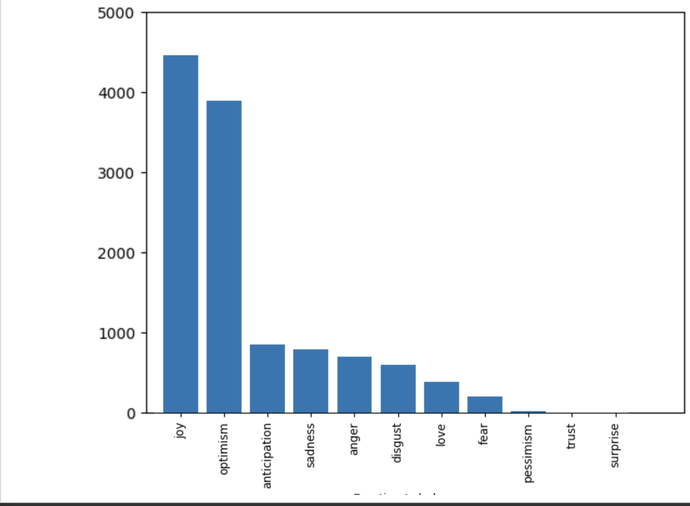
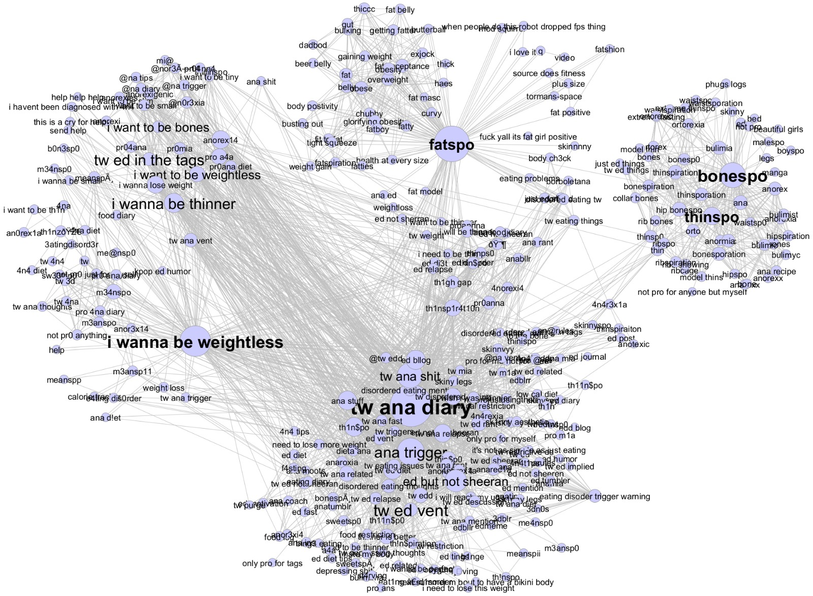

For resources and help, visit National Eating Disorders Association (NEDA) , (800) 931-2237
Introduction and Motivation
Eating disorders are a serious mental health condition characterized by obsessive thoughts and unhealthy behaviors around food, eating, body weight and shape. Eating disorders represent a major public health concern. First, they are common: about 24 million people in the US struggle with an eating disorder, such as anorexia, bulimia, or binge eating disorder. Moreover, eating disorders can have severe physical and emotional consequences, and are among the deadliest of all mental health conditions, second only to opioid addiction in mortality rate. More than 10,000 people die each year and many more have their health compromised due to medical complications from the disease.
Eating disorders start early in life, with typical age of onset around 14 to 16. In addition, their prevalence in a population has grown from 3.5% for the 2000-2006 period to 7.8% for the 2013-2018 period. During the Covid-19 pandemic, the incidence of eating disorders further skyrocketed, particularly among girls.
Social Media Platforms and Online Communities
Online communities can offer people struggling with eating disorders several benefits, such as a sense of belonging, a platform to vent, share their experiences, seek validation, and share advice on coping strategies and treatment options. However, such support may actually be toxic as it reinforces unhealthy behaviors or beliefs about food and body weight. For example, tips to stave off hunger or encouragement to prolong a fast promotes eating disorder behaviors. To quantify these interactions, we measure a range of emotions expressed in pro-ED tweets.
• Adolescents turn to social media for health information, which includes dieting and weight-loss advice
• Strongly interconnected with self-harm communities (non-suicidal self-injury)
• Share group identity, exchange tips, extreme dieting and exercise plans, motivating images. Twitter has little moderation.
Pro-ana communities are online spaces, originally on blogs, online forums, but also increasingly on social media platforms, that promote "anorexia as a lifestyle not an illness." Pro-ana communities provide a venue for individuals with eating disorders to share tips on losing weight and concealing weight loss from others, as well as "thinspiration" images of very thin bodies to motivate weight loss. Researchers have argued that pro-ana communities have both positive and negative effects on individuals with eating disorders.
Data
Twitter
We construct a dataset containing 2.6M tweets using keywords to query Twitter for messages covering the periods from 2022-10 to 2023-03. Information collected on tweets includes screenname, timestamp, message content, and hashtags. These keywords cover a variety of topics related to eating disorder topics (thinspo, proana, etc.), dieting and weight-loss topics (ketodiet, weightloss, etc.), and anti-diet culture topics (bodypositivity, dietculture, etc.).
Eating Disorder Support Forums
ED Support Forums are online communities sharing diets and promoting pro anorexia discussions. Most of these diets are harmful and have several negative implications on one's mental and physical health. Over 8000 posts from several most popular one hundred threads of each forum are scraped. Below table shows some of most popular forums.
| Name of Forum |
Replies |
Views |
| ABC Diet |
116K |
9.1M |
| 2468 Diet |
24.5K |
2.9M |
| Vegetarian/Vegan/Raw Food diets |
69.9K |
4M |
| Fasting and Cleansing |
360K |
19.7M |
Tumblr
To gather the data required for this study, we leveraged PyTumblr, a Python interface to the Tumblr API. This tool allowed us to programmatically access and download Tumblr posts. Our script was configured to specifically seek out posts that contained hashtags or content related to eating disorders.
As part of our analysis, we found that hashtags typically associated with broad, general topics such as dieting, fitness, and overall health are increasingly being used within posts promoting or discussing eating disorders
Results
Twitter
We measure emotions in tweet textual content using SpanEmo, which is a state-of-the-art model for text-based emotion analysis. We focus on emotions expressed in pro-ED (eating disorder) tweets, including anger, sadness, anxiety, and hopelessness, among others. By analyzing these emotions, we aim to gain a better understanding of the online discourse surrounding eating disorders and identify potential risks and opportunities for intervention and support.



A hashtag co-occurrence graph is a network that represents
relationships between hashtags in a set of social media posts.
An edge between two hashtags exists if they appear to-
gether in a post, with the weight of the edge represent-
ing the number of times the two hashtags co-occur. Vari-
ous centrality metrics are used to quantify the connectivity
and communicability of a node to other nodes in the net-
work. These include betweenness centrality, which identifies
‘bridge’ nodes by quantifying the number of times a node
acts as a single bridge or connector along the shortest path
between two other nodes

Eating Disorder Support Forums
Emotional analysis on the posts gives us the top three emotions as joy, optimism and anticipation. These prove that people in communities are gaining a positive experience as these communities offer support and ensure accountability.

Reply to View ratios are used to find threads which are more engaging. A higher ratio indicates that the users are more likely to contribute to conversation. For instance, for Vegetarian/Vegan/Raw Food Diet, the threads with highest Reply to View ratio are:
| Thread Name |
Reply to View Ratio |
| Life is pain au chocolat |
0.08 |
| How many are you vegan/vegetarian |
0.065 |
| Excuse me,Vegans I require your opinions |
0.061 |
| How long have you been vegan/vegetarian? |
0.057 |
| Why are you Vegan\\Vegetariansim? |
0.050 |
Tumblr

Co-occurrence hashtag network for Tumblr Data
Conclusion
- Social media and online communities play an increasingly important role in the transmission of deviant behaviors.
- Poorly moderated online spaces enable such extreme behaviors to flourish.
- Online communities normalize eating disorders and self-harm, making recovery more difficult.
Future Work
- Analyse how a user gets drawn to these eating disorder communities.
- Perform Topic Modelling on data.
- Understand how emotions of a person involved in these communities changes over time